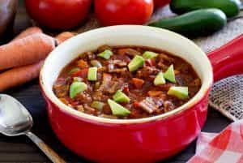
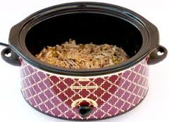
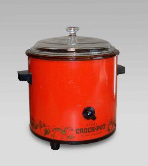

Quintus can be found at qcurtius.com. He is the author of the books On Duties, Thirty Seven, Sallust: The Conspiracy Of Catiline And The War Of Jugurtha, and other books. His work has been reviewed at Taki's Magazine. He can be followed on Twitter


If you’re single and living alone, it’s important to know how to cook nutritious meals for yourself on a consistent basis. Like practically everything else in today’s world, you need to learn this skill yourself: no one is going to spoon-feed you. What I want to talk about today is an efficient cooking strategy that can optimize the time, cost, and nutritive value of your home cooking. What I’m talking about here is the crock-pot (or slow-cooker). Using a slow-cooker will save you a huge amount of time and money.

A crock-pot is a stand-alone “slow-cooking” appliance that is used to cook or heat meals prepared in one vessel. Think of it as the modern version of the cast-iron Dutch oven that could be filled with food and set by the hearth in colonial times. You may have seen these appliances at your local mega-store like Walmart or Target. Let me explain first why I think these devices are an important addition to your kitchen arsenal, and why you need to get one now. There is no real difference between a crock-pot and a slow-cooker. The word “crock-pot” is actually a brand name, but has been used so often that it has become synonymous with slow-cooker.
You can buy a good, reliable slow-cooker for under $20. Mine was only about $15. Considering how useful and efficient these machines are, this to me is a decision that should be an easy one. I can’t think of any other regularly-used kitchen appliance that is this inexpensive.
The whole idea of a slow-cooker is that you can load it with meats, vegetables, or other edibles, set the selector switch, and then leave it to do its work. That’s all you need to do. There is no monitoring or checking involved. In fact, since many recipes call for cooking times of 6 to 8 hours (set on “low”) you can load it up in the morning and then have a meal waiting for you when you come home. This can save you a lot of time. Cooking is fun, but sometimes when we get home after a hard day, we don’t want to have to deal with food preparation. The crock pot gives you this freedom.
Another great thing about the crock pot is that it doesn’t just give you one meal: it can feed you for two or three days. So when you make a batch of food, you won’t have to cook for the next few days. You just store the leftovers in the refrigerator and then heat them up the next day. This can save you a lot of time and energy during the week.
The great thing about crock pots or slow-cookers is that they always come with little recipe books. The one I bought came with a book that had dozens of recipes for stews and soups of all kinds. There will be recipes in these books that you would never have thought of. And it’s nice to have everything in one place.

Another good thing about slow-cookers is that they encourage you to eat vegetables and beans. I am not exactly the world’s biggest vegetable fan, but I do like eating them if they are cooked as part of an entire dish, and if they are flavored and seasoned. Cooking with a slow-cooker relieves you of the task of cooking vegetables separately.
Of all the kinds of meals you will make at home, I doubt you will encounter any that are as easy to prepare as meals made in slow-cookers. Pretty much all you need to do is put the meats and vegetables in the crock pot, add your seasonings and stock, and then set the selector switch to “low” or “high” depending on the recipe. That is all.
Choosing a slow cooker should not be a bewildering task. I’m going to give you my opinion on the things you should look for, and what has served me well. Each person, of course, will have to make his own decision on what works best for him.

When you go to the appliances section of your local megastore, you’re going to see a large number of slow-cooker options. These can range in price from $15 to over $150. Some look very sophisticated, and some do not. This my advice:
So there it is. For a minimum of investment, you can improve the quality of your meals, save money, and free up a lot of time during the week. I think you’ll be glad you bought one.
Read More: How To Make Beef Jerky